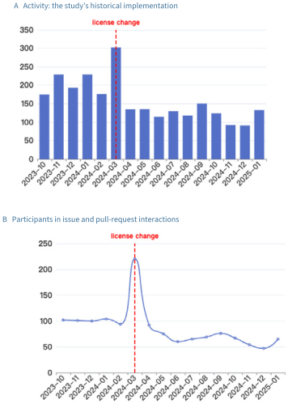
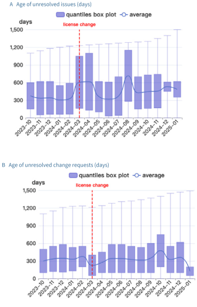
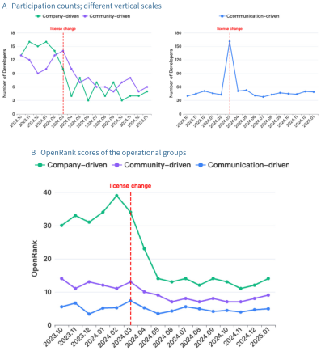
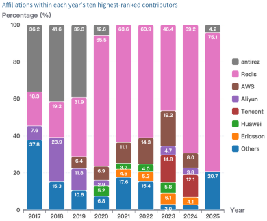
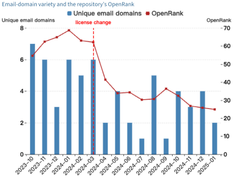
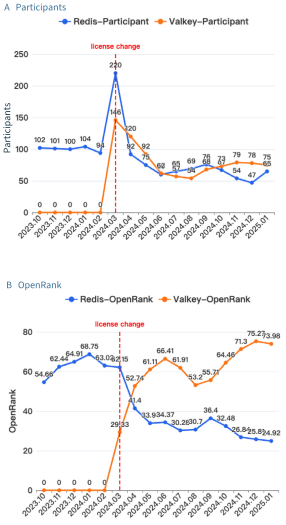
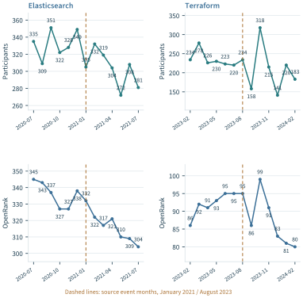

A licensing dispute makes visible a question that ordinary development statistics can leave unresolved: how should the work, benefits, and authority of an open source ecosystem be related? A company may finance development, other companies may supply experienced contributors, maintainers may coordinate work across organizational boundaries, and users may depend on the resulting software. These relationships create several legitimate objects of inquiry. Counting contributions clarifies one part of the arrangement. Evaluating a change to that arrangement also requires an account of the people affected, the alternatives available to them, and the criteria by which consequences will be judged.
Chapter 7 examined the recognition of individual contributions. Chapter 8 followed the continuity of collaborative functions when projects become inactive, move, or are replaced. This chapter extends the analysis to arrangements spanning projects and organizations. Its principal evidence is our exploratory study of the Redis license change and the development of Valkey (Han et al., 2026). The study combines repository metrics, contributor profiles, organizational attribution, and comparisons with other licensing changes. Together, these observations show how an evaluation can move from a visible event to a more precise account of participation and its redistribution.
The contribution developed here is a method for connecting ecosystem evidence to a bounded governance judgment. The method preserves the distinction between observed work, attributed relationships, institutional authority, and evaluated consequences. Redis and Valkey provide the central empirical case. Organizational and geographical mapping then expose the aggregation choices involved when the same infrastructure supports broader judgments. Strategic intelligence appears briefly as a destination for these results; its institutional development is reserved for a later treatment of evaluation applications.
9.1 Governance as an Evaluation Problem#
An ecosystem contains several kinds of relationship#
An open source ecosystem is sustained through relationships that cannot all be represented by one network. A development network records who interacts with which projects. An affiliation map connects contributors to organizations under a stated attribution rule. A dependency network identifies where software is used by other software. A governance arrangement specifies who can admit maintainers, approve changes, allocate resources, or amend rules. Each representation answers a different question, even when many of its participants are the same.
This distinction is already implicit in the separation of activity, influence, and contribution in Part II. An OpenRank score expresses a position within a specified collaboration model. Its interpretation depends on the graph, edge construction, initial values, and temporal procedure. It does not, by itself, record the authority to change a license or the responsibility to support a deployed service. An evaluator must establish the additional relationships that connect measured participation to the decision under examination.
Research on open source governance supplies useful context. O’Mahony and Ferraro (2007) traced the development of authority in Debian, showing how formal organization and mechanisms of accountability emerged alongside technical contribution. O’Mahony and Karp (2022) examined a platform’s changing governance arrangements and the relationship between access, control, and participation. These studies make authority and its organization substantive empirical questions. They support examining governance directly rather than inferring it from a contributor ranking.
Table 9.1 separates the relationships needed in the present chapter. A contributor can be associated with an employer without speaking for that employer in every interaction. A project can receive substantial external work while a single entity retains particular decision rights. A user can be strongly affected by a change while leaving few public development events. Evaluation becomes more informative when these positions remain visible.
| Relationship | Observable evidence | Governance question |
|---|---|---|
| Contribution | Attributed work, interactions, review, maintenance histories. | Which capabilities depend on whose participation? |
| Affiliation | Dated employment or organizational attribution, with unresolved cases. | How is participation distributed across organizations? |
| Authority | Charters, decision procedures, permissions, documented responsibilities. | Who can change rules or commit the arrangement to an action? |
| Dependence and benefit | Required functions, use relationships, support commitments, transition outcomes. | Who benefits, who bears costs, and whose work is affected? |
Book synthesis. A collaboration score supplies evidence within the first relationship; connections to the other relationships require additional observations.
Specify the arrangement and the decision it informs#
The question structure introduced in Part I remains the organizing device: Here is the evaluated object or arrangement; identifies affected objects and relevant outcomes; describes conditions; supplies the reference; fixes the horizon; identifies stakeholders; and states the purpose. For a governance inquiry, the evaluated arrangement may include licensing, contribution procedures, organizational support, and decision rights. The evaluation must say which of these is being investigated and which are treated as surrounding conditions.
Consider the question of whether external organizations materially participated in Redis development before the 2024 change. Its object is a contribution arrangement; its evidence concerns attributed work over a historical period. A different question asks whether an operator should adopt a successor project. That inquiry concerns compatibility, maintenance commitments, migration effort, and the operator’s required functions. The historical participation study informs it, but cannot complete it. A third question concerns the fairness of commercial returns. That requires an explicit standard of fairness and evidence about costs, benefits, and obligations that development logs do not contain.
A useful starting practice is to write the decision question before selecting the indicator. For example: which external organizations supplied collaboration that the existing arrangement relied on, and where was that collaboration observed after the change? This question has identifiable entities, periods, and observations. It can be answered more directly than whether a company or a community “won” a dispute. It also leaves room for a consequential finding: development may contract at one location while an alternative arrangement acquires contributors.
Make the reference and the affected parties explicit#
The same observed transition can have different consequences at different boundaries. For a vendor, maintaining a commercially sustainable product can be central. For an external contributor, continued participation under acceptable rules may matter more. For downstream users, availability of compatible software and support may dominate both concerns. A governance evaluation must identify these interests before aggregating them into a collective assessment.
The reference matters equally. Comparing a repository with its own previous months establishes a historical difference. Comparing the original repository with a fork describes two developing arrangements. Neither comparison automatically identifies what would have happened without the licensing change. The distinction determines the strength of the conclusion, not merely its wording. In this chapter, the primary study supplies an exploratory account of observed changes; stronger causal or distributive judgments are assigned their additional evidential requirements.
9.2 Observing the Redis Governance Transition#
The event, the questions, and the observation windows#
On 20 March 2024, Redis announced that releases beginning with Redis 7.4 would use the Redis Source Available License v2 or the Server Side Public License v1 instead of BSD 3-Clause. Its announcement linked the change to the sustainability of investment and the commercial position of cloud providers (Redis, 2024). On 28 March, the Linux Foundation announced Valkey, continuing development from Redis 7.2.4 under BSD 3-Clause, with support from maintainers and several companies (Linux Foundation, 2024). These statements establish the announced changes and their proponents’ positions. They do not independently establish every claim made in the dispute.
Our study (Han et al., 2026) asks six connected questions: how repository metrics changed; how contributor groups changed; which contributors and affiliated organizations were deeply involved; whether participation extended to Valkey; how organizational variety changed; and how the observed pattern compared with Elasticsearch and Terraform. The sequence moves from a repository-wide signal to the participants behind it, then to the wider arrangements through which their work could continue.
The data combine public collaboration events obtained through GH Archive and OpenDigger with GitHub profile information used in contributor characterization. The principal monthly window is October 2023–January 2025. The investigation of core contributors extends from 2017 to June 2025. The comparison projects have separate windows around their respective changes, as shown in Table 9.2. Preserving these boundaries is necessary because the study combines different analytical samples rather than observing one uniform panel throughout.
| RQ | Analytical object | Observation window |
|---|---|---|
| RQ1 | Redis repository metrics. | October 2023–January 2025. |
| RQ2 | Counts and OpenRank of operational contributor groups. | October 2023–January 2025. |
| RQ3 | Annual top-ten contributors and attributed contribution shares. | 2017–June 2025; final year incomplete. |
| RQ4 | Redis/Valkey participation and contributor connections. | Monthly comparison: October 2023–January 2025. |
| RQ5 | Unique email domains as a proxy for organizational variety. | October 2023–January 2025. |
| RQ6 | Elasticsearch and Terraform comparison series. | July 2020–July 2021; February 2023–February 2024. |
Adapted from Han et al. (2026), Sections 4–5. Question labels and periods refer to the source analyses. The annual selection, monthly groups, and two-project series are not one common longitudinal cohort.
There is a further historical boundary. On 1 May 2025, Redis announced AGPLv3 as an additional licensing option starting with Redis 8 (Trollope, 2025). This occurred after the main monthly window but within the final, partial year of the core-contributor analysis. Consequently, the monthly series cannot evaluate the later announcement, and the 2025 annual bar cannot be read as another full year under unchanged conditions. The case concerns a specified transition, not a permanent classification of all subsequent Redis releases.
Licensing research has long shown that changes can arise from several considerations and that the rationale may be difficult to recover from repository records (Vendome et al., 2017). This makes the combination of dated announcements and behavioral evidence particularly useful. The announcements locate decisions and stated reasons; the observations characterize participation around them. Maintaining that separation prevents the public explanation of a change from becoming its presumed empirical effect.
Retaining the historical meaning of the measures#
The study uses several measures already developed in Part II, but their historical implementation must be retained. Its Activity measure aggregates five recorded behaviors with weights and normalizes by elapsed days. The five behaviors are issue comments, opened issues, opened pull requests, pull-request review comments, and merged pull requests. Replacing the reported series with a later Activity formula would create a new analysis, even if the new implementation were preferable for another purpose.
The OpenRank account describes a monthly collaboration network of developers and repositories, with previous-month scores entering the initialization. The study also draws on the OpenRank Leaderboard formulation. The published series are therefore treated here as the study’s reported OpenRank outputs. Their exact historical graph and normalization procedure should accompany any computational replication. The distinction between ecosystem influence and project-level contribution established in Chapter 5 remains necessary; a shared name does not make differently constructed scores interchangeable.
Participants include people engaged in issue or pull-request interactions. A person who comments during a controversy can therefore enter the participation count without contributing code. Stars and platform forks provide further observations of attention, while added and removed lines describe code changes of potentially very different kinds. The source also reports a commit-based bus factor using a 50% contribution threshold. Its value describes the concentration of the selected commits under that definition, rather than an independently observed capacity to survive the departure of particular maintainers.
Two measures require special care: issue age and change-request age. They describe unresolved items. Their distributions are not distributions of the time taken to resolve completed work. A reduction in the age of open pull requests may accompany the arrival of new requests, closure of old ones, or changes in the composition of the backlog. It cannot establish faster resolution without following items to their outcomes. Table 9.3 records the resulting interpretation rules.
| Measure | Source implementation | Interpretation boundary |
|---|---|---|
| Activity | Weighted sum of five behavior types, normalized by elapsed days. | Retain the source series; later formulas are separate versions. |
| OpenRank | Reported collaboration-network scores with temporal initialization. | Preserve graph and normalization semantics; influence and local contribution remain distinct. |
| Participants | Accounts engaged in issue or pull-request interactions. | Includes discussion; not a count of code authors alone. |
| Stars / forks | Monthly platform attention measures. | Platform forks do not each represent a sustained alternative project. |
| Bus factor | Commit concentration at a 50% contribution threshold. | A historical concentration measure, not verified departure resilience. |
| Open-item age | Ages of unresolved issues or change requests. | Describes the remaining stock, not time to completion of closed items. |
Source definitions from Han et al. (2026), Section 4; interpretation boundaries are aligned with Chapters 4–6. The article does not print numerical weights for the five Activity behaviors.
The source identifies a data deposit at https://zenodo.org/records/16888468. The presentation here reuses the published observations and figures; it does not report a new execution of that dataset or a newly fitted statistical model. Where numerical point labels are available, they can be transcribed for a faithful redraw. Where they are absent or overlap, retaining the original plot geometry avoids manufacturing precision from a picture.
An attention peak and a changing pattern of work#
The clearest aggregate feature is the March 2024 peak. The study reports 220 Redis participants in that month and more than 1,000 issue comments. Activity, stars, and platform forks also rose around the announcement. Figure 9.1 presents the Activity and participation panels at a scale suitable for reading their temporal pattern. The joint increase locates a period of intense attention and interaction. Its meaning depends on which actions produced it.

Participation and Activity subsequently settled below several of their earlier monthly values. Yet the source’s other measures do not imply that all kinds of work moved together. The code-change series contains later bursts, which the authors associate with particular development changes. This is compatible with a smaller participant population undertaking substantial changes. Conversely, a large discussion count can coexist with limited expansion of the group doing sustained development. These combinations are precisely why the event stream should be decomposed before a governance judgment is made.
The open-item distributions add another dimension (Figure 9.2). They show the changing stock of unresolved issues and change requests. Their value lies in identifying a workload that deserves investigation: the age and composition of work remaining open. For an assessment of responsiveness, the next evidence would be item-level arrival, first response, review, closure, and reopening histories, together with the handling of items still open at the end of observation. The monthly distributions alone support a description of backlog conditions.

The study thus provides a useful first separation between attention and continuing collaboration. A controversy can increase the number of visible interactions while the composition of sustained participation changes in another direction. In the language of Chapter 4, an event count becomes evidence about a construct only through its definition and context. In the language of Chapter 8, the continuity of a collaborative capability requires a temporal account of the work and responsibility that remain available.
Contributor groups reveal the composition of the response#
To examine this composition, the study defines three operational groups using email characteristics and observed behavior. Table 9.4 retains the rules and the strict “more than 20” annual thresholds. The original labels refer to motivation; this chapter uses them as names for the source’s inferred participation categories. Public traces provide evidence about behavior and affiliation signals, while motivation requires further evidence from contributors themselves.
| Source label | Reported identification rule |
|---|---|
| Company-driven | Corporate email and more than 20 PR-related activities within one year. |
| Community-driven | Non-corporate email and more than 20 issue- or PR-related activities within one year. |
| Communication-driven | No code contribution; participation only in issue discussions. |
Adapted from Han et al. (2026), Section 4.2.1. PR-related activities include opening and merging pull requests and review comments; issue-related activities include opening, closing, and commenting. These are heuristic categories. Classification precedence, unresolved identities, and contributors below the thresholds require explicit treatment in a replication.
This qualification is consistent with the study’s own discussion of construct validity. It also accords with survey research showing that contributors can have multiple, changing motivations (Gerosa et al., 2021). A corporate email can accompany paid work, voluntary work, or a mixture; a personal email does not establish independence from commercial employment. In addition, an active issue-only contributor with a non-corporate email could satisfy descriptions associated with more than one group. A replication should state precedence rules, treatment of missing email information, and the disposition of contributors below the frequency thresholds.
The group counts and OpenRank trajectories are presented together in Figure 9.3. Counts for the company-driven and community-driven categories fall after the event relative to much of the preceding period. The communication-driven category shows a pronounced event-month increase and then returns toward its earlier range. The lower panel shows a substantial reduction in the company-driven group’s reported OpenRank, a smaller decline for the community-driven group, and a comparatively stable trajectory for the communication-driven group.

The distinction between counts and scores matters here. A brief increase in the number of discussants need not produce a similar increase in a network measure that incorporates relationships and previous scores. Likewise, a change in OpenRank can reflect both local activity and changes elsewhere in the modeled network. The two panels describe complementary aspects of participation; neither is a substitute for examining what work was performed or what responsibilities participants held.
For governance, the result directs attention toward the sustained contributors and the arrangements under which they participate. The source’s operational groups are useful for locating that question. Their aggregate trends should be followed by contributor-level histories and, where motives matter, explanations from the people concerned. This preserves the empirical contribution of the classification while giving its categories an appropriately limited interpretation.
9.3 Organizational Contributions and Ecosystem Reconfiguration#
The repository-level observations identify a change in participation. To examine its ecosystem significance, the study next follows the organizations associated with core work, the contributors participating in Valkey, and the different trajectories of two comparison cases. The evaluated boundary expands at each step: from a repository, to its organizational base, to related development arrangements. This is where Chapter 8’s distinction between a local discontinuity and the continuity of a function becomes a governance question.
Core contributors and the organizational base#
The third research question examines the ten contributors with the highest reported contribution scores in each year, from 2017 through June 2025, and attributes their contributions using organizational information. Figure 9.4 reproduces the resulting shares. The Redis category accounts for 65.5% in 2020 and 46.4% in 2023; AWS accounts for 19.2% in 2023. Other named categories include Aliyun, Tencent, Huawei, and Ericsson. These observations establish substantial participation by organizations outside the Redis company within the selected core.

The result bears directly on a narrow factual proposition: cloud providers were not absent from the recorded core contribution history. It does not settle a broader question about whether their total contributions were proportionate to their benefits. The latter requires a reference principle and additional quantities, including relevant development costs, financial support, service provision, and returns. The contribution study makes an otherwise obscured part of the relationship visible; it does not supply an accounting system for the whole commercial ecosystem.
The annual selection also needs to remain explicit. The top ten can change from year to year. The chart is therefore a sequence of selected cores, not a fixed cohort of ten people followed longitudinally. A rise in one category’s share can reflect its own changing score, changes in other categories, or changes in membership of the selected set. Nor are all categories strictly organizational: the source identifies the original creator separately. Retaining that distinction is preferable to silently recoding a person as a company or redistributing the published percentages.
Organizational involvement has dimensions beyond a selected core. Research on OpenStack, for example, characterizes company participation through intensity, extent, and focus, showing that firms’ contribution patterns differ across projects (Zhang et al., 2021). For the present case, this supports asking which tasks and components external contributors supported, as well as how much score they received. A small number of experienced contributors can matter for particular maintenance responsibilities even when their share of the aggregate measure is modest.
The fifth research question uses unique email domains as a proxy for organizational variety. Figure 9.5 shows a narrower observed range after the announcement, including one domain in July and September 2024. The proxy should retain its actual name. One organization may use several domains; public email services can combine unrelated contributors; and missing addresses can hide affiliations. The figure describes the variety observed under the study’s rule. It does not establish that only one organization remained involved in the entire Redis ecosystem during those months.

Together, the core-contributor and domain analyses motivate a more exact governance inquiry: which contributions and responsibilities depend on which organizations, and how stable are those relationships? This is a richer question than counting logos or registered organizational accounts. It connects the measurement infrastructure of Chapter 6 to an assessment of the collaboration on which a project relies.
Participation across Redis and Valkey#
The fourth research question changes the boundary from Redis alone to Redis and Valkey. Figure 9.6 retains the source’s monthly participant and OpenRank series. Redis has 220 participants in March 2024, 92 in April, and 65 in January 2025. Valkey has 146, 120, and 75 in the corresponding months. Redis OpenRank is 62.15 in March, 41.4 in April, and 24.92 in January 2025; Valkey’s corresponding values are 29.33, 52.74, and 73.98. Table 9.5 provides these printed checkpoints without requiring the reader to resolve overlapping plot labels.
| Participants | OpenRank | |||
|---|---|---|---|---|
| (lr)2-3(l)4-5 Month | Redis | Valkey | Redis | Valkey |
| March 2024 | 220 | 146 | 62.15 | 29.33 |
| April 2024 | 92 | 120 | 41.4 | 52.74 |
| January 2025 | 65 | 75 | 24.92 | 73.98 |
All values transcribed from Han et al. (2026), Figure 5; original precision retained. March is Valkey’s entry period. The table does not identify individual transfers or a causal effect.

The contrast is informative, but it is not a flow diagram. A declining count in one repository and a rising count in another do not identify the same individuals moving between them. Contributors can participate in both, return after an interval, or leave both. The study’s contributor-level investigation provides a more specific observation: seven of the ten leading Redis contributors selected for 2024 also contributed to Valkey. This supports a connection between the communities. It does not, by itself, establish exclusive transfer, the abandonment of all upstream work, or the migration of downstream users.
The participant and OpenRank series also need not move proportionally. Their divergence reflects different measurement targets: a count of engaged accounts and a modeled position in collaboration. By the end of the observed period, Valkey’s OpenRank exceeds Redis’s while the participant counts remain much closer. This is evidence about the particular collaboration model and period, not a universal statement about software quality, installed use, or future viability.
For an ecosystem evaluation, the fork therefore creates a second location at which continuity can be investigated. Chapter 8 showed why the continued availability of a function can matter more than survival at one address. Here, the history and overlap of contributors give evidence that the alternative location acquired collaborative capacity. A complete continuity judgment would additionally examine releases, maintenance responsibilities, compatibility, security response, and users’ ability to move. These are the links through which a development alternative becomes an effective alternative for affected parties.
The result also changes how a decline should be described. At the Redis repository boundary, some measures declined. At the combined development boundary, participation was being reorganized across two projects. At the level of downstream benefit, the available study does not measure the outcome. Keeping these boundaries separate allows the observed redistribution to inform governance without equating every local decline with an ecosystem loss.
Comparison cases and the limits of explanation#
Elasticsearch and Terraform provide two further observations of licensing changes. Figure 9.7 redraws all printed values from the source comparison figure, separating participant counts and OpenRank into different panels. The periods are July 2020–July 2021 and February 2023–February 2024, respectively. The source figure places the event markers in January 2021 and August 2023. Those plotted dates are retained here; descriptions in the source prose are not used to shift the series or relabel its points.

Elasticsearch’s reported OpenRank declines gradually across the latter part of its window, while participant counts fluctuate. Terraform’s series includes substantial month-to-month variation, including the September decline and October rebound shown in the figure. The patterns differ from the relatively abrupt post-March reduction in several Redis measures. The comparison establishes heterogeneity across these selected cases. Explaining that heterogeneity requires the different organizational arrangements, participant histories, and timing of alternatives to be examined.
A later study by Foster and Germonprez (2026) follows Elasticsearch/OpenSearch, Terraform/OpenTofu, and Redis/Valkey using netnographic accounts and organizational contribution evidence. It examines how vendor arguments, changes in governance boundaries, and community responses unfold together. This provides complementary evidence about processes that repository curves alone cannot identify. Its contribution definitions and observation windows differ from ours, so its observations should not be silently merged into the same time series or treated as a numerical replication.
The comparison is consequently explanatory in an exploratory sense. It helps identify mechanisms and competing interpretations. A causal estimate would require a design capable of addressing the counterfactual. Interrupted time-series methods, for example, require a justified intervention specification and attention to temporal dependence, concurrent changes, and other time-varying influences (Lopez Bernal et al., 2017). The short pre-event Redis window, the partly observed entry of Valkey, and the coexistence of licensing and organizational changes make those considerations substantive.
The central empirical conclusion remains strong within its scope. External organizations participated materially in the selected Redis contribution history; the announcement period combined intense discussion with subsequent changes in sustained participation; and Valkey became another location of collaboration involving contributors from the earlier community. These findings support an account of changing collaborative arrangements. They do not alone establish a causal effect of licensing, a complete financial balance, or an irreversible future trajectory.
9.4 Attribution across Organizations, Regions, and Fields#
Aggregation begins with an attributable entity#
The Redis case exposes a general difficulty in ecosystem evaluation: the entities named in a governance question are often different from the entities recorded by a platform. An event identifies an account and a repository. A decision may concern a company, a regional community, or a technical field. Moving between these levels requires a mapping whose evidence, time validity, and uncertainty can be inspected.
OpenDigger’s entity and label mechanisms, described in Chapter 6, provide infrastructure for constructing such sets. They allow repository collections and contextual categories to be defined and reused. Their analytical value depends on the meaning assigned to membership. A repository listed under an organization can indicate platform ownership, stewardship, employment relationships, or a broader association. Those meanings should not be conflated. An organizational merger, a contributor’s change of employer, or a repository transfer can alter the mapping without changing the underlying historical event.
A robust record therefore distinguishes the event date, the date for which an attribution is asserted, and the date on which the attribution was collected or revised. Historical claims should use the applicable historical mapping when it is available. Applying today’s profile information retrospectively may change the apparent distribution of past contributions. If the historical mapping cannot be recovered, the resulting uncertainty belongs in the interpretation of the aggregate.
The account-to-person step needs similar care. One person can use several accounts, an account can be shared, and automation can produce events that resemble human activity. Research on mining GitHub demonstrates why platform records require interpretation and purpose-specific filtering (Kalliamvakou et al., 2014). For governance analysis, the practical implication is to name the measured unit: accounts, identified people, attributed organizations, or repositories. Each can be useful; the claim must follow the unit actually established.
A public distribution report and its coverage boundary#
Our published developer-distribution analysis offers a concrete example (Zhao, 2025). Its reported ten-year GitHub collaboration population contains 22.08 million accounts with issue or pull-request participation. Approximately 4.06 million have parsed locations, giving the reported coverage of 18.4%. It separately reports more than 6.07 million collaborators active in 2024. These populations differ in eligibility and period; their values should not be combined into one denominator.
| Reported population | Accounts |
|---|---|
| Ten-year issue/PR collaboration population | 22.08 million |
| Located subset of that population | About 4.06 million |
| Collaborators active in 2024 | More than 6.07 million |
Reported by Zhao (2025); location coverage is 18.4%. These are platform-account populations with different observation boundaries.
Coverage constrains the meaning of a geographical map. Let be the number of eligible accounts assigned to region , and the number with unresolved location, within a fixed population of accounts. If recorded assignments are correct and each account has exactly one relevant region, the number of accounts associated with region is bounded by
This is an identification bound under stated assumptions, not a confidence interval. It describes how much is left open by unresolved membership. The upper bounds for all regions cannot hold simultaneously because the same unknown accounts cannot each be assigned to every region. If the known assignments can themselves be wrong, their error must also be addressed.
The bound clarifies why publishing a coverage rate is more useful than silently removing unknowns. A share among located accounts has denominator ; a share of the entire eligible population has denominator . Replacing one with the other changes the claim. An estimate for the whole population would require additional assumptions about the location process, supported where possible by validation. Greater coverage in a highly active subset would not establish representativeness for less active accounts.
Geographical research on open source also shows the importance of spatial scale. Wachs et al. (2022) identify substantial concentration within countries, illustrating that a national total can conceal regional differences. For evaluation, this motivates matching the geographical unit to the decision. A local capacity-building question may require evidence about nearby institutions and collaboration, while a national descriptive report has a different scope. Neither a profile location nor a regional total establishes a person’s nationality, an organization’s ownership, or control over the resulting software.
Overlapping memberships require an explicit counting rule#
Organizational and technical categories frequently overlap. A contributor can work across organizations over time; a project can serve several technical fields; and repositories can be related through shared packages, components, or ownership. The analytical task determines whether overlap should be retained or allocated.
Let be a deduplicated set of eligible observations for period , let be a nonnegative quantity attached to observation , and let represent its attribution to group . An aggregate can be written as
For a partition of an additive total, the weights across groups, including an unknown category, must sum to one for each observation. Full counting can instead assign the same observation to every relevant group. That is appropriate for questions about involvement, provided the resulting group totals are not presented as disjoint shares of the whole.
The formula specifies attribution; it does not make every metric additive. Distinct contributor counts require set union when repositories share contributors. A network score requires its own interpretation of aggregation and normalization. Summing scores from incompatible graph constructions or different runs does not produce a common measure of ecosystem influence. Part II’s metric distinctions therefore remain necessary at the aggregation stage.
Cross-platform aggregation introduces a related issue. Combining two platform account totals requires a rule for linking accounts. If internally deduplicated entity sets and refer to the same kind of entity, then Without the intersection, the combined entity count is bounded between the larger input count and their sum. These are counts under the chosen entity definition. They become bounds on people only if the within-platform and cross-platform identity assumptions are justified. A larger coverage footprint is useful, but it is not itself proof that a deduplicated population has been measured.
An aggregate supports claims at its own level#
Even correctly attributed aggregates can be misused. A region’s activity can be associated with institutional conditions without establishing that every contributor in the region has the same characteristics. The classic distinction between ecological and individual relationships explains why evidence at one level cannot automatically identify a relationship at another (Robinson, 1950). In an open source setting, the analogous error is to infer an individual’s motivations or a firm’s control from an aggregate regional share.
Table 9.7 summarizes the different mappings. The common requirement is an attribution record that can be revised without erasing the history of the published result. This allows an evaluator to distinguish a change in the ecosystem from a change in what has been identified about it. It also gives affected participants a concrete basis for correcting an assignment.
| Target | Mapping to preserve | Distinction to retain |
|---|---|---|
| Organization | Time-valid affiliation and repository relationships; unknown assignments. | Employment, project ownership, stewardship, and decision authority. |
| Region | Location source, parsing rule, spatial unit, date, and coverage. | Observed location, nationality, ownership, and control. |
| Technical field | Versioned project inclusion rules and overlapping memberships. | Involvement in a field and an additive share of a partition. |
| Cross-platform entity | Account linking evidence and unresolved overlaps. | Accounts, linked entities, and verified people. |
Book synthesis extending the entity and label infrastructure in Chapter 6. Mapping updates should be distinguishable from changes in the underlying activity.
9.5 From Evidence to Governance Judgments#
Separate the factual proposition from the criterion#
The Redis study is most useful to governance when its findings are translated into explicit propositions. “External cloud organizations participated in the selected core contribution history” is a factual proposition supported by the attribution analysis. “Those organizations returned a fair share of the benefits they received” is an evaluative proposition requiring a criterion of fairness and additional evidence. The first can inform the second without being equivalent to it.
This distinction prevents both overreach and the loss of useful evidence. A contribution analysis can challenge a claim that an organization provided no development contribution. It can locate dependence on external expertise and show a redistribution of participation. Those are consequential findings even when financial proportionality remains unmeasured. A governance discussion becomes more precise by identifying which part of its argument the evidence resolves.
A similar separation applies to authority. A large contribution share can support recognition of expertise and dependence. It does not automatically confer a particular legal right, a vote, or control of a project. Conversely, formal authority can exist without a proportionate share of recorded development. Evaluating the arrangement requires a declared view of how authority should relate to contribution, responsibility, and affected interests. That view should be open to examination alongside the observations.
Compare arrangements through several substantive criteria#
For the present case, a governance judgment can be organized around four questions. Can the required technical functions be maintained? Can participants continue to work under conditions they are willing and able to sustain? Are decision procedures and responsibilities clear to those affected? How are the benefits and burdens of the arrangement distributed? These questions connect the capability account of Chapter 2 with the empirical work in Chapters 7–9.
Table 9.8 shows what the available evidence contributes and what remains to be established. It deliberately keeps criteria separate. There is no observed exchange rate by which an increase in OpenRank compensates for an unmet support obligation, nor a demonstrated weight that converts a contribution share into a fair commercial return. If a decision requires a composite score, its weighting and compensability assumptions become part of the evaluation design. The methodological literature on composite indicators emphasizes the need to expose such choices and examine the robustness of the conclusions to them (OECD et al., 2008).
| Criterion | Contribution of the case evidence | Further evidence for a judgment |
|---|---|---|
| Technical continuity | Work and experienced contributors are observed at more than one location. | Required functions, releases, compatibility, support responsibilities, and user transitions. |
| Sustained participation | Group counts, scores, and attributed contributions change over time. | Contributor histories, explanations, workloads, and continuing commitments. |
| Decision accountability | Public announcements identify decisions and their stated rationale. | Applicable procedures, authority, participation in decisions, and correction or appeal routes. |
| Distribution of benefits and burdens | External organizations make visible development contributions. | Defined obligations, relevant costs and returns, affected interests, and an explicit evaluative standard. |
Book synthesis based on the Redis study. These are criteria for further assessment, not scored outcomes or findings of a policy-impact evaluation.
This approach permits a conclusion that is useful without being artificially complete. The evidence can justify closer examination of a changed organizational base, a successor’s collaborative capacity, or the concentration of particular responsibilities. The decision about an arrangement then incorporates the additional evidence relevant to its purpose. It may remain conditional on compatibility work, support commitments, or an unresolved attribution. A conditional judgment is a well-specified result when those conditions are material.
Construct a decision record from the case#
Consider an organization reviewing its dependence on software affected by a governance transition. The following is a proposed use of the evidence, not a report of a decision observed in the Redis study. The organization would first specify its required functions, operational horizon, and the releases or services under consideration. It would then use the collaboration evidence to identify the people and organizations supporting each candidate arrangement, and examine whether the required responsibilities are covered.
The historical results would support a concise finding: development participation changed around the announcement, and an alternative project acquired collaboration involving contributors from the original community. The organization would next obtain evidence about its own conditions—compatibility, migration effort, release support, maintenance ownership, and obligations associated with the selected arrangement. The decision record would connect each option to those requirements, identify unresolved questions, and name a review date or event that would reopen the assessment.
This sequence gives the evaluator and the decision maker different responsibilities. The evaluator warrants the evidence and the scope of its interpretation. The decision maker identifies the relevant priorities, accepts responsibility for the chosen action, and records why the available evidence is sufficient for that action. Keeping these responsibilities visible is especially important when the evaluator also develops the measurement infrastructure or has relationships with the communities being evaluated.
The record should preserve a path back to the observations. A statement about organizational diversity should identify the affiliation method; a statement about a fork’s participation should identify its period and population; a statement about dependence should identify the required function. This makes disagreement productive. A reviewer can challenge the mapping, supply missing evidence, or contest a criterion without having to reject the entire evaluation as a single undifferentiated score.
Use disagreement to locate the unresolved question#
Two assessments can differ because they use different observations, because they interpret the same observations differently, or because they prioritize different outcomes. These disagreements require different responses. A disputed affiliation calls for evidence about the attribution. A disputed causal claim calls for a stronger design or a narrower conclusion. A disputed distribution of benefits calls for an explicit discussion of the criterion and the interests represented.
In the Redis case, a disagreement over financial reciprocity cannot be settled merely by adding more months to an Activity chart. A disagreement about whether experienced contributors appeared in Valkey can be investigated through linked histories. A disagreement about downstream continuity requires following the functions and users affected. The evaluation system contributes by locating the question that additional evidence could resolve and identifying where a value judgment remains necessary.
The interface with strategic intelligence#
Strategic intelligence is one important application of ecosystem evaluation. The OpenThink practice manuscript describes an effort to connect open source observation, assessment, and decision support (OpenThink manuscript, n.d.). For this chapter, its relevance is the interface between an evaluation result and the institution that may use it. The broader organization of a think tank, its products, and its application cases require a separate treatment.
At this interface, a report should carry a decision question, the population and period observed, the principal findings, the criteria needed for interpretation, and the unresolved evidence that could change the judgment. This preserves the analytical work when a technical result is condensed for an audience responsible for action. Cash et al. (2003) distinguish the credibility, salience, and legitimacy of knowledge used in decision processes. In the present setting, the corresponding practical task is to make a result technically defensible, relevant to a stated use, and examinable by those whose interests it affects.
The public distribution report discussed in Section 9.4 illustrates the importance of this handoff: its population definition and location coverage must travel with any geographical conclusion. The Redis case provides another example: evidence of external contributions should retain its denominator when it enters a discussion of governance. A published report establishes that an analysis has been communicated. Evidence that it informed a decision, and evidence that the resulting action improved an outcome, are further observations. Later application studies can examine those steps directly.
9.6 Accountability and Learning from Evaluation#
The evaluation procedure is itself part of governance#
Once an evaluation influences recognition, resource allocation, or the treatment of organizations, its own procedures become consequential. The choice of population determines whose work is visible. The affiliation rule affects who receives credit. The selection of a reference affects which differences appear meaningful. Publishing these choices is therefore part of making the evaluation accountable.
Parkhurst (2017) develops a complementary account of evidence use in which appropriate evidence, transparency, accountability, and contestability belong to the institutional process. Applied here, the point is concrete: a technically reproducible score can still be used for a question it was not designed to answer. Evaluation quality includes the relationship between the result and its authorized interpretation, as well as the computation that produced it.
An accountable release should consequently preserve the source snapshot, metric version, entity mapping, and stated interpretation. A correction should identify whether it changes an observation, an attribution, a calculation, or a conclusion. Where individual or organizational identification is uncertain, the public output can report an unresolved category rather than convert a weak proxy into a confident assignment. Participants need an intelligible route to raise a factual correction, while disagreements about criteria need a forum appropriate to the decision.
Different uncertainties require different follow-up evidence#
The case contains several distinct uncertainties. Observation coverage concerns what the platform records. Attribution concerns the relation between an account and a person or organization. Construct interpretation concerns whether a measure supports the property being discussed. Causal uncertainty concerns the alternative history against which a change is compared. Normative disagreement concerns which outcomes and obligations should govern the judgment.
These uncertainties should be handled at their respective levels. Reconstructing historical affiliations can improve an organizational analysis. Interviews can improve an account of contributor motives. Item-level histories can improve an assessment of response and completion. A stronger comparative design can improve a causal claim. Deliberation about benefits and responsibilities can clarify a fairness criterion. Treating all of these as measurement noise would conceal the work required to improve the evaluation.
The historical metric issue has a related implication. A later method can improve future evaluations without rewriting the meaning of an earlier published result. If a new implementation is applied retrospectively, the result should be released as a versioned reanalysis with a comparison to the original. This allows theory and methods to improve while preserving an inspectable account of what the earlier evidence actually supported.
Follow the consequences of using an evaluation#
Policy learning begins when a judgment is connected to an action whose consequences can be observed. If an organization changes its contribution policy, a community revises its decision procedure, or a public institution supports a development capability, the follow-up evaluation should return to the outcomes and affected parties originally specified. More activity may be relevant, but it should be connected to the intended benefit and the burdens created by the intervention.
Follow-up can also revise the original interpretation. A successor may attract contributors while leaving a downstream need unmet; apparent organizational diversity may conceal a common employer; recognition may reveal maintenance work and alter participation. Such findings concern the evaluation model as well as the immediate decision. They return the consequences of using an evaluation to the objects, conditions, and claims specified in Part I.
From empirical studies to cumulative knowledge#
Across Part III, the question changes from recognizing a person’s work to sustaining a collaborative capability and judging an ecosystem arrangement. The studies are connected by the framework of Part I and the measurement resources of Part II. They are not replications of one experiment: educational assessment, retrospective archival analysis, and an exploratory governance study have different populations, outcomes, and comparisons. Their shared contribution lies in identifying where an evaluation needs a more exact account of observation, interpretation, and use.
| Case | What the evidence supports | Next validation question |
|---|---|---|
| RecognitionCourse assessment | Agreement with specified judgments, documented moderation and correction, and sensitivity of individual positions. | Does the procedure represent work consistently, permit effective correction, and support decisions in another setting? |
| ContinuityArchived projects | Reasons for archival, observed transition practices, historical trajectories, and a retrospective classification structure. | Do defined functions and responsibilities continue after transition, over the intended horizon? |
| GovernanceRedis and Valkey | Changes in observed participation, selected organizational contributions, and collaboration across related projects. | Are attribution and aggregation defensible, alternatives comparable, and affected parties’ outcomes represented? |
Evidence is developed in Chapters 7–9. Prospective, causal, and normative claims retain different requirements. The validation questions are the book’s synthesis of those requirements.
Table 9.9 identifies the resulting validation questions. Chapter 10, Open Source Science and Technology Think Tanks, examines how situated findings become reports, observatories, and evidence for institutional decisions. Chapter 11, Disciplinary Development and the Tool Ecosystem, develops the shared validation, benchmark comparisons, and research practices needed to make such work cumulative. The cases supply a basis for that return: evidence can refine a framework while also identifying the claims that still require investigation.
References#
Cash, D. W., Clark, W. C., Alcock, F., Dickson, N. M., Eckley, N., Guston, D. H., Jäger, J., and Mitchell, R. B. (2003). Knowledge systems for sustainable development. Proceedings of the National Academy of Sciences, 100(14), 8086–8091. DOI: 10.1073/pnas.1231332100.
Foster, D., and Germonprez, M. (2026). Freeriding and rebellion: An investigation of open source vendor relicensing and member hard forking events. Information Systems Journal, advance online publication, 8 September 2026. DOI: 10.1111/isj.70060.
Gerosa, M. A., Wiese, I., Trinkenreich, B., Link, G., Robles, G., Treude, C., Steinmacher, I., and Sarma, A. (2021). The shifting sands of motivation: Revisiting what drives contributors in open source. In Proceedings of the 43rd International Conference on Software Engineering, pp. 1046–1058. DOI: 10.1109/ICSE43902.2021.00098.
Han, F., Zhao, S., Xia, X., and Wang, W. (2026). Are cloud providers exploiting open-source? An exploratory study of Redis license change. Information and Software Technology, 190, 107951. DOI: 10.1016/j.infsof.2025.107951. Published online 3 November 2025. Study data deposit: https://zenodo.org/records/16888468.
Kalliamvakou, E., Gousios, G., Blincoe, K., Singer, L., German, D. M., and Damian, D. (2014). The promises and perils of mining GitHub. In Proceedings of the 11th Working Conference on Mining Software Repositories, pp. 92–101. DOI: 10.1145/2597073.2597074.
Linux Foundation (2024). Linux Foundation launches open source Valkey community. Announcement, 28 March. https://www.linuxfoundation.org/press/linux-foundation-launches-open-source-valkey-community. Accessed 1 November 2026.
Lopez Bernal, J., Cummins, S., and Gasparrini, A. (2017). Interrupted time series regression for the evaluation of public health interventions: A tutorial. International Journal of Epidemiology, 46(1), 348–355. DOI: 10.1093/ije/dyw098. Corrigendum: International Journal of Epidemiology, 50(3), 1045 (2021), DOI: 10.1093/ije/dyaa118.
OECD, European Union, and European Commission Joint Research Centre (2008). Handbook on Constructing Composite Indicators: Methodology and User Guide. OECD Publishing, Paris. DOI: 10.1787/9789264043466-en.
O’Mahony, S., and Ferraro, F. (2007). The emergence of governance in an open source community. Academy of Management Journal, 50(5), 1079–1106. DOI: 10.5465/amj.2007.27169153.
O’Mahony, S., and Karp, R. (2022). From proprietary to collective governance: How do platform participation strategies evolve? Strategic Management Journal, 43(3), 530–562. DOI: 10.1002/smj.3150.
Building China’s Open Source Science and Technology Think Tank: Enabling National Technological Self-Reliance through Scientific Evaluation (n.d.). Unpublished Chinese-language OpenThink practice and development manuscript supplied by the authors. English title translated for this bibliography; publication status unverified.
Parkhurst, J. (2017). The Politics of Evidence: From Evidence-Based Policy to the Good Governance of Evidence. Routledge, Abingdon. DOI: 10.4324/9781315675008.
Redis (2024). Redis adopts dual source-available licensing. Announcement, 20 March. https://redis.io/blog/redis-adopts-dual-source-available-licensing/. Accessed 1 November 2026.
Robinson, W. S. (1950). Ecological correlations and the behavior of individuals. American Sociological Review, 15(3), 351–357. DOI: 10.2307/2087176.
Trollope, R. (2025). Redis is now available under the AGPLv3 open source license. Redis, 1 May. https://redis.io/blog/agplv3/. Accessed 1 November 2026.
Vendome, C., Bavota, G., Di Penta, M., Linares-Vásquez, M., German, D., and Poshyvanyk, D. (2017). License usage and changes: A large-scale study on GitHub. Empirical Software Engineering, 22(3), 1537–1577. DOI: 10.1007/s10664-016-9438-4.
Wachs, J., Nitecki, M., Schueller, W., and Polleres, A. (2022). The geography of open source software: Evidence from GitHub. Technological Forecasting and Social Change, 176, 121478. DOI: 10.1016/j.techfore.2022.121478.
Zhang, Y., Zhou, M., Mockus, A., and Jin, Z. (2021). Companies’ participation in OSS development—An empirical study of OpenStack. IEEE Transactions on Software Engineering, 47(10), 2242–2259. DOI: 10.1109/TSE.2019.2946156.
Zhao, S. (2025). GitHub and Gitee data reveal the open source world’s “population census”: Where do Chinese developers rank? OpenDigger blog, 11 April. Chinese-language report; title translated. https://open-digger.cn/blog/2025-4-11-global-developer-analysis. Accessed 1 November 2026.